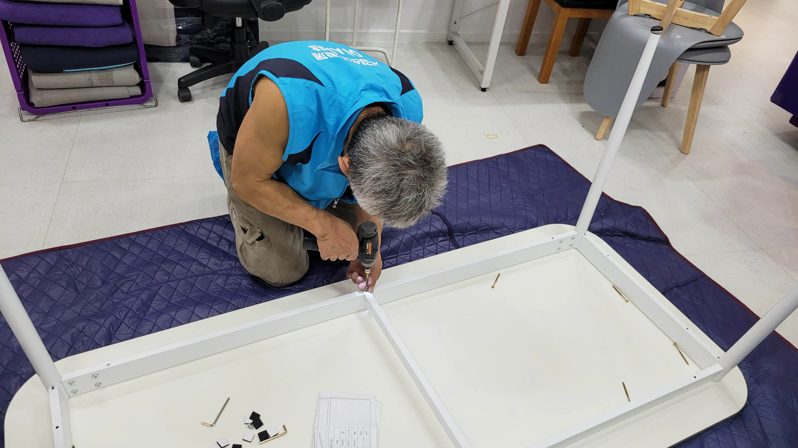
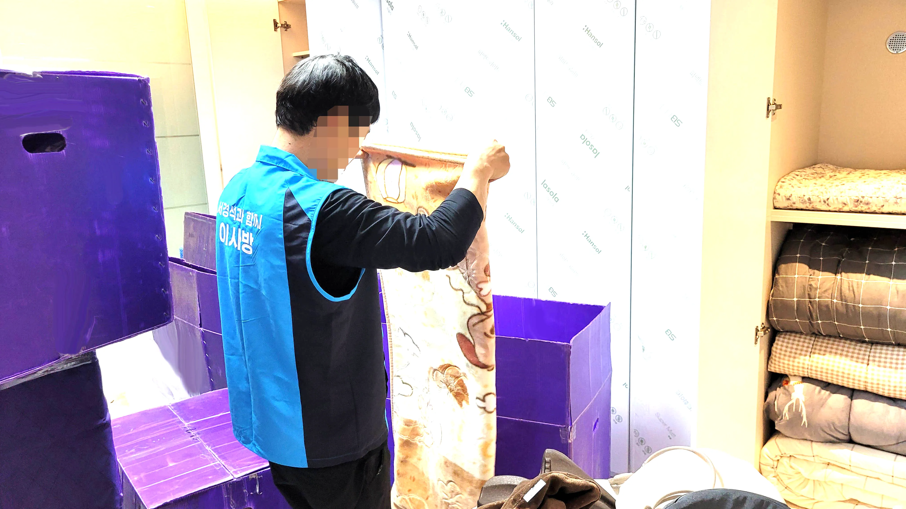
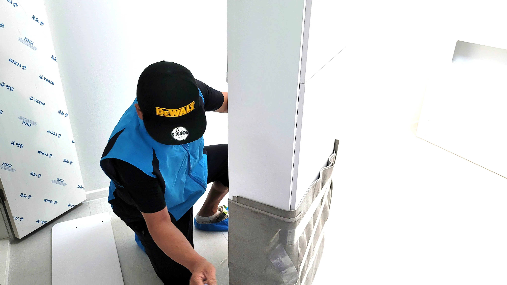

삼교동포장이사
삼교동 포장이사가격비교 믿을만한 곳 추천삼교동포장이사포장이사 준비에서 비용은 가장 민감한 부분입니다. 업체마다 같은 조건에서도 가격이 크게 달라 손해를 보기 쉽다고 하네요. 온라인 포장이사견적비용 비교 서비스를 이용하면 클릭 몇 번으로 맞춤 비용을 확인하고, 최적의 업체를 선택할 수 있습니다. 이 과정에서 추가 비용이나 보관비, 보험료 등도 비교 가능해, 예상치 못한 지출을 예방할 수 있습니다. 무료 견적 신청만으로 비용 절감과 효율적인 이사 준비가 동시에 가능하니, 이제는 이사도 스마트하게 계획할 수 있습니다.
포장이사 가격은 업체마다 편차가 상당합니다. 같은 거리, 같은 규모의 집이라도 서비스 수준이나 포장재 종류에 따라 금액이 크게 달라질 수 있다고 하네요. 직접 전화로 비교하면 시간이 오래 걸리고, 조건 있습니다.
삼교동 포장이사가격비교 믿을만한 곳 추천

확인도 복잡합니다. 그러나 온라인 포장이사가격 비교 서비스를 이용하면 클릭 몇 번으로 여러 업체의 가격을 한눈에 확인할 수 있습니다. 추가 비용, 보관 비용, 보험 적용 여부까지 비교 가능해, 가장 합리적인 선택을 할 수 있습니다. 특히 무료 견적 서비스를 활용정확한 포장이사 견적은 이사 계획의 핵심입니다. 그러나 전화 상담만으로 견적을 받으면 정보가 제한적이고 조건 비교도 어렵죠. 이제는 온라인 포장이사견적 서비스를 통해 클릭 몇 번으로 맞춤 견적을 받을 수 있다고 하네요. 집 크기, 이사 난이도, 요청 서비스에 맞춰 상세한 비용 산출이 가능하며, 여러 업체의 견적을 비교할 수 있어 합리적인 선택이 가능합니다. 또한, 온라인 견적은 기록이 남아 나중에 업체 선정 과정에서도 편리하게 참고할 수 있습니다. 무료로 제공되므로 비용 부담 없이 효율적인 이사 준비가 가능합니다.하면 시간과 비용을 동시에 절약하면서 안전하게 이사를 진행할 수 있어, 이사 준비 과정에서 가장 효율적인 방법이라고 할 수
🚛100% 무료견적 알아보기🚛  삼교동 포장이사가격비교 믿을만한 곳 추천확인도 복잡합니다. 그러나 온라인 포장이사가격 비교 서비스를 이용하면 클릭 몇 번으로 여러 업체의 가격을 한눈에 확인할 수 있습니다. 추가 비용, 보관 비용, 보험 적용 여부까지 비교 가능해, 가장 합리적인 선택을 할 수 있습니다. 특히 무료 견적 서비스를 활용정확한 포장이사 견적은 이사 계획의 핵심입니다. 그러나 전화 상담만으로 견적을 받으면 정보가 제한적이고 조건 비교도 어렵죠. 이제는 온라인 포장이사견적 서비스를 통해 클릭 몇 번으로 맞춤 견적을 받을 수 있다고 하네요. 집 크기, 이사 난이도, 요청 서비스에 맞춰 상세한 비용 산출이 가능하며, 여러 업체의 견적을 비교할 수 있어 합리적인 선택이 가능합니다. 또한, 온라인 견적은 기록이 남아 나중에 업체 선정 과정에서도 편리하게 참고할 수 있습니다. 무료로 제공되므로 비용 부담 없이 효율적인 이사 준비가 가능합니다.하면 시간과 비용을 동시에 절약하면서 안전하게 이사를 진행할 수 있어, 이사 준비 과정에서 가장 효율적인 방법이라고 할 수
포장이사 무료견적 서비스
| 삼교동포장이사 | 삼교동이사업체 | 삼교동이삿짐센터 |
|---|---|---|
| 삼교동포장이사 | 포장이사비교견적 | 이사무료견적 |
| 삼교동이사업체 | 이삿짐센터 | 포장이사업체비교 |
| 삼교동이삿짐센터 | 포장이사가격 | 이사업체추천 |


FAQ
전국 어디든 100% 무료 비교견적 가능합니다.
포장이사는 전문 팀이 짐 포장부터 운송, 정리까지 전 과정을 책임지는 서비스입니다. 일반 이사는 운송만 제공하는 경우가 많아, 포장과 정리를 직접 해야 하므로 체력과 시간이 많이 필요합니다. 포장이사를 이용하면 시간과 비용을 절약하면서 안전하게 이사를 진행할 수 있습니다.